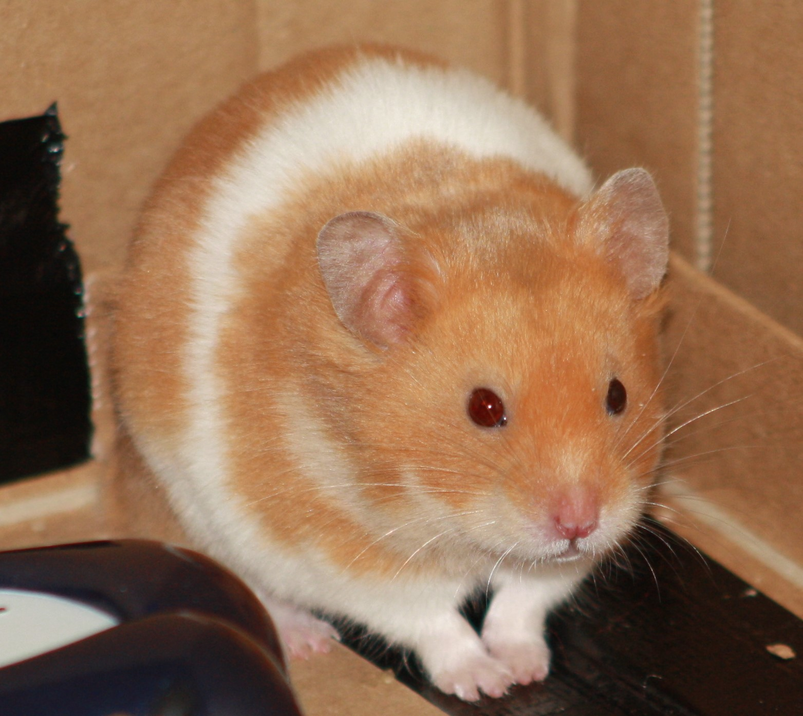

Hear about how I got my name, my Alexander cage, my favourite recipes and lots more.
May-2017 | Milku
will soon be blowing in the wind.
It's Day 10 of 30 Days Wild, a wet one for my little Girl Guide who is away at camp. I knew she was wise to pack lots of waterproofs.
The rest of my human family aren't at Waddecar enjoying nature. They're not even inclined to go outside in Blackpool. One of the little humans has invited her friends to visit so they can watch films. I suspect they won't be watching anything I can tell you about for 30 Days Wild. But I'm hoping they might spare me a bit of popcorn.
Some of the other humans have found a rainy day activity that will help them interact with nature. They're in the middle of making a wind sock. Their usual book didn't provide a very inspiring looking object so they've looked through their library and are hoping to create a Japanese streamer, shaped like a fish.
It looked ambitious and I wasn't confident that they could reproduce anything resembling a fish. But they have drawn up a reasonable shape on some spare material. Personally, I wouldn't have chosen fabric that colour, but they never listen to me.
One of my little humans is busy colouring it in using fabric crayons. It is taking a while because she is a bit of a perfectionist. The first side is complete, but I might have to wait a while before I can show you the streamer blowing in the breeze.
Not only has the other side of the fish got to be coloured, but they've got to sew the pieces together. I hope they remember to leave the mouth and the tail unstitched. They need to insert some wire to keep those open and let the wind blow through. I'm not even sure they know where they are going to install it...and I doubt they'll want to go outside to attach it anywhere when it's raining.
10-Jun-2017 | Milku